tcs-sim simulates a vehicle's payloads: for each one a configuration names, it answers as the device would -- over UDP, or on a kernel dummy device -- with the packets, timings and errors its simulator configuration asks for. It is started with tcspecial and tcs-moc, as Running the Programs, in the tcspecial manual, describes, and tcspecial's --simulate says which payloads it stands in for.
Where tcs-sim sits, in the thermostat example. tcspecial reaches each simulated payload where it would reach the device -- here its sim_address -- and cannot tell tcs-sim from the hardware. The sensors' readings (1) come from the simulator's world, which the heater switches tcspecial drives (2) warm, so what tcspecial reads follows from what it decided. The window (3) is how a person changes what tcs-sim does while it runs: see Step by step.
What simulating a payload takes, which is not a property of the payload: how often it produces a packet, and how it divides one into segments. Only tcs-sim acts on it; tcs-moc reads it too, to show what the tcs-sim it started is simulating, and does without it if it is not there.
Every setting but simulate is optional, and a setting written empty is a setting not stated: packet_interval: "" and no packet_interval at all mean the same thing, so a file somebody has half filled in still loads. tcs-gui writes only the settings that hold a value, and a file it begins names each payload under its type and nothing else. A value that is there and wrong is still refused, naming it.
simulated_payload_groups optional
group the name payloads refer to, naming the entry
simulate true or false, for every payload in the group
enable true for every payload in the group to start
enabled; a payload's own overrides it
... any of the settings below
simulated_payloads a list of types
type <type> the type of payload, as the tcspecial
configuration writes it, holding the list of
the simulated payloads of that type
payload the payload this one simulates, naming the
entry
simulate true for tcs-sim to simulate it, false for the
real device: required, here or in its group
enable true for it to start enabled, as though its
panel's Enable button had been pressed; left out,
or false, it starts disabled. In XML,
<enable value="true"/>
protocol which transport, for a network payload
payload_address the socket the payload answers from, if this file
cares to say
payload_port which port it answers from, likewise
group the group to take unstated settings from, if any
... any of the settings below
The simulated payloads are grouped by type, as a configuration's nodes are: each entry of simulated_payloads is type and a type, holding the payloads of that type, each named by payload. A group is named by group and says no type, a payload's being the one it is written under. In XML, <simulated_payloads> holds <type name="..."> elements of <payload name="..."> elements, and <simulated_payload_groups> holds <group name="..."> elements. Nothing in the file is in an order that means anything: the types, the payloads of one and the groups may be written in any order. A file in the shape before this one, each payload with name: and type: of its own, is refused at the line of its first entry; tools/convert-format.py rewrites it, keeping its comments.
Simulated or real: simulate
Every payload the file names says whether it is simulated, with simulate: true has tcs-sim simulate it, and false leaves it to the real device, for which tcs-sim makes nothing. It is said once -- in the payload, or in the group it names -- and never in both, even where the two would agree: a payload does not override its group's. A payload the file does not name is real too.
simulated_payload_groups: - group: zone_temps packet_interval: 100 ms simulate: true # temp_1, temp_2 and temp_3 are simulated simulated_payloads: - type network: - payload: heaters_1 simulate: false # the real heater - payload: temp_1 group: zone_temps
Before it simulates anything, tcs-sim compares each payload's simulate with what is at the payload's endpoint, by the same rules tcspecial judges a payload by (see Simulated, Dummy or Real Devices: --simulate), and will not start on a disagreement: simulate: true where the configuration points at real hardware, or simulate: false where it points at a simulated or dummy device. A simulated device tcs-sim makes itself, a pseudo-terminal or a socket, is not there yet, and that is no disagreement; a dummy device, which the scripts in bin/ make, has to be. A payload the file does not name whose endpoint is a simulated or dummy device all the same is refused too: tcs-sim controls and shows every simulated payload, so each one is named. A network or device-file payload is a real device either way and is not compared: simulate: true has tcs-sim answer at its far end, and false leaves it to whatever is there.
Each simulated payload has the same panel, whatever simulates it: its button, which has it take part or not, and what it sent and what reached it. Where the kernel makes a dummy device, tcs-sim watches it -- the lines of a gpio-sim chip, the registers of an i2c-stub chip -- and counts what the vehicle does to it. Two things cannot be seen: a read of an i2c-stub chip, which changes nothing, and the samples an iio_dummy sensor's kernel trigger makes. A payload that is only driven, such as a heater, sends nothing, counts what the vehicle sends it, and takes no packet interval. Switched off, a payload sends nothing, answers nothing and acts on nothing -- a heater warms no mass -- and still counts what reaches it.
What it simulates
Two things describe the payload rather than the simulation, and are required for that reason. The two files are joined by handler name and by nothing else -- and a name is what a set copied from another one keeps -- so a simulator configuration written for one set parses happily against another set's payloads, and the run that follows looks like a payload that never sends. Stating the type here makes that pairing an error instead.
type the type the payload is written under, in the
tcspecial configuration's own word: network,
device-file, serial, i2c, spi, i2c_tmass,
spi_tmass, can, iio, rpmsg, gpio or hdlc. Must be
the type that configuration
writes it under
protocol which transport, for a network payload, and refused
for any other type. Must be what that configuration
says
payload_address the socket the simulated payload answers from: a
host for a UDP payload, a path for a Unix datagram
one. Optional, only for those two types, and not
for a triggered one, which waits at the address the
tcspecial configuration gives
payload_port the port it answers from. Optional, and refused for
a Unix datagram payload, which answers from a path
Where the payload is is not stated here at all: the simulator takes it from the tcspecial configuration, which decides it. Writing payload_interface here -- or address or port, which that file spelled them before -- is refused with the place they belong; they are the likeliest thing to be carried across from the other file.
What this file may say about an address is the other end of the same link: the socket the simulated payload answers from.
simulated_payloads: - type network: - payload: auto-send packet_interval: 1 s payload_address: 127.0.0.1 # the socket this payload answers payload_port: 7000 # from, not the one the handler protocol: udp # waits at
Nothing in the link needs it -- a handler learns where its payload is from the first packet it gets -- but something outside the simulation may: a rule on a firewall, or a capture being read afterwards. Only a datagram payload that is not asked has an address of its own to bind; a stream payload, and a datagram payload that is asked, is the end that waits, so it binds the address the tcspecial configuration gives it. A Unix datagram payload answers from a path, so it takes an address and no port. Neither end may be the other: a payload told to bind its handler's own socket is refused rather than left to fail at the bind. Stating neither gets what every simulator configuration asked for before this existed -- any interface and a port the system chooses.
A word that is not a setting is refused here too -- in a payload, in a group, and in the file's own sections. A misspelled setting that was ignored would have the simulator do something other than what the file asked for and say nothing: a payload asked through a misspelling to drop a tenth of its packets drops none, and looks exactly like one that was never asked.
Neither the type nor the transport is taken from this file: the tcspecial configuration decides both, and a disagreement about either is an error naming the payload and what each file says of it. A group may carry them, like any other setting -- though payloads that share a rate need not share a transport, which is why the thermostat's simulator file leaves them with the payloads.
Settings
packet_interval how long between packets, as a length of time --
1 s, 500 ms, 0.25 s -- or ``continuous`` for as fast
as the payload can be driven. Periodic payloads
only: a triggered one sends when it is asked, and
stating an interval for one is an error
segment_interval how long between the segments of one packet,
likewise, ``continuous`` included; defaults to the
packet interval
segment_size bytes in one segment; defaults to the whole packet,
whose size the tcspecial configuration gives
The physics model
Every simulated payload above sends bytes from a random number generator, which exercises a link and no control loop at all: three sensors sending noise never agree, so a vote over them says nothing and a thermostat downstream of it cannot be seen working.
A physics model gives them something to agree about. It is the vehicle's physical parts -- a zone, the heaters that warm it -- each simulated alone and joined to the others. Join the sensors to what they measure and the heaters' switches to the heaters, and what the vehicle reads becomes a consequence of what the vehicle drove.
The model is in the simulator file's world section, beside the simulated payloads joined to it, so that one file says the whole of what tcs-sim simulates and a payload's connects names a terminal the same file says is there. Two examples that fly one vehicle share it by sharing the whole simulator file, a link to it beside each configuration. The world is YAML only: a simulator file written in XML has none.
world in the simulator file. Optional
ambient_temp the temperature every thermal mass's surroundings
are about: "288.15 K". Required where there is a
thermal_mass
physics
components the components, grouped by type
connections how they are joined, each from an output to an
input
The model holds the components it is made of, under components, and the connections between them, under connections, as a configuration holds nodes and links. The components are grouped by type, as a configuration's nodes are: each entry of components is type and a type, holding the components of that type, each named by component. Nothing in the model is in an order that means anything -- not the types, the components of one, or the connections -- and tcs-sim runs it the same however it is written: two events due at one moment come in the order of their components' names, and the outputs an input sums are added in the order of theirs. The shapes a model had before are refused, each told where it goes now: a simulator file still naming a model in a file of its own, physics: zone-physics.yaml; such a file given as a simulator file; a physics section at the top of a simulator file, not under world; a zone stating its own environment, which is the world's ambient_temp; a component with name: and type: of its own; and a simulator file still declaring masses itself.
Where tcs-gui drew each component is kept last in the simulator file, in a tcs-gui section of its own, as a configuration keeps its nodes' places:
tcs-gui: nodes: - { node: zone, x: -193, y: 280 } pages: thermostat-common: [zone]
tcs-sim ignores it. A component it does not name is laid out down tcs-gui's Physics pane by name, so the section is never needed, and it is written as components are moved there. Each component is drawn on the page it was placed from: one placed on a subdiagram's page is listed under that subdiagram's name in pages, and one listed nowhere is drawn on the top page. A component is placed from the physics list as a node is from its own list: click its type, and it is put down the pane where the others are, or drag the type onto the Physics pane, and it is put where it is let go. In tcs-gui a component is moved, edited, deleted and joined as a node is: drag it, right click it for Edit and Delete, and draw a line from its output or input terminal to another component, for a connection, or to a payload, to set that payload's connects. A line drawn the other way, from a payload's terminal to a component, sets it too: from a moc terminal, what drives the payload, it offers the component's inputs -- a heater's on, a zone's heater_1 -- and from a world terminal, what it reports, the component's outputs -- a zone's temperature. Where a line could mean more than one terminal -- a heater's heat, current and heating, to a sensor -- tcs-gui asks which.
Each component is one simple part, of one of these types:
heater a resistance on a supply, switched on and off
component the name connections and payloads use
power what it gives out while on, at its nominal
voltage: "60 W"
voltage its supply's nominal voltage: "28 V"
ripple how much its supply varies: a standard deviation,
as a fraction of nominal, written bare. Optional
ripple_time how slowly it varies, as a length of time. With
ripple and refused without it
thermal_mass one body at one temperature, in surroundings
about the world's ambient_temp
component the name connections and payloads use
time_constant how fast it loses the difference, as a length
of time
capacity how much heat it takes to warm it a kelvin:
"20 J/K"
swing how far its surroundings swing either side of
ambient_temp, as a sine wave: "3 K". Optional
period how long one swing takes. With swing and refused
without it
wander how far its surroundings wander at random: a
standard deviation, "0.5 K". Optional
wander_time how slowly they wander, as a length of time. With
wander and refused without it
start where it starts: "292.15 K". Optional; left out,
it starts at ambient_temp
heater_1_power what its first heater of its own gives while on:
"4 W". Wanted where heater_1 is joined
heater_2_power and its second's, wanted where heater_2 is
sun sunlight and shadow, through an orbit
component the name connections and payloads use
period how long one orbit takes: "90 min"
eclipse how much of it is in shadow, as a fraction,
written bare: "0.35"
start how far round the orbit it starts, from the start
of its sunlight, as a fraction. Optional
solar_array panels turning light into current
component the name connections and payloads use
current what it gives in full sunlight: "7 A"
load something on the bus that draws a current
component the name connections and payloads use
current what it draws while it is on: "2 A"
bus where the sources' currents and the loads' meet
component the name connections and payloads use
battery a store of charge on the bus
component the name connections and payloads use
capacity how much it holds full: "10 Ah"
empty its open-circuit voltage empty: "24 V"
full its open-circuit voltage full, more than empty:
"33.2 V"
resistance its internal resistance: "0.05 ohm"
charge how full it starts, as a fraction: "0.6"
engine a throttled engine and its fuel
component the name connections and payloads use
thrust its thrust at full throttle: "4500 N"
isp its specific impulse, as a length of time:
"311 s"
fuel the fuel it starts with: "100 kg"
body a mass falling under gravity, pushed and burning
component the name connections and payloads use
mass its mass at the start, fuel and all: "1500 kg"
gravity the gravity it falls in: "1.62 m/s2"
altitude how high it starts: "500 m"
velocity how fast it starts, up more than nought:
"-20 m/s"
Every figure is written with its unit, and one without it, or in another unit, is refused, saying what to write: a bare 60 could be watts or kelvin a second. A fraction, which has no unit, is written bare. A thermal_zone, which is what a thermal_mass was called before, is refused, told the name it has now.
Each type has fixed terminals, the places it is joined at, each an input or an output, carrying a value in one unit or a decision:
heater on in a decision: whether it is on
heat out W, nought while off
current out A, nought while off
thermal_mass heat in W, the sum of everything joined to it
temperature out K
heater_1 in a decision: its first heater of its
own, adding heater_1_power while on
heater_2 in a decision: its second, adding
heater_2_power while on
sun light out a ratio: one lit, nought in shadow
solar_array light in a ratio
current out A, its full-sun current times light
load shed in a decision: shed while asserted, and
never shed where nothing is joined
current out A, nought while shed
bus supply in A, the sum of the sources joined to it
demand in A, the sum of the loads joined to it
current out A, supply less demand
battery offered in A, what the bus has left over
voltage out V
current out A, what flows in: nought into a full
battery, whose charge is shunted
charge out a ratio, the fraction it holds
engine throttle in a ratio, held within nought and one
force out N, nothing once its fuel is gone
flow out kg/s, the fuel it burns
body force in N, the sum of the forces on it
flow in kg/s, the sum of the mass it loses
altitude out m
velocity out m/s, up more than nought
contact out a decision: asserted on the ground
A terminal is written as the component's name and its own, joined by a dot: zone.temperature. A connection goes from an output to an input of the same kind, and one joining two outputs, two inputs, or a value in one unit to an input in another, is refused, naming both. An input takes one output, or the sum of every output joined to it where its type says so, as a zone's heat does.
A heater's heat goes as the square of its supply voltage, and its current as the voltage. A battery's charge moves in a straight line with its current, and its voltage runs straight from empty to full with its charge, plus what its resistance drops; full, a charging current is shunted, and empty, it is held there with its voltage below empty showing it. The sun is lit or dark, changing all at once twice an orbit. An engine's thrust is its throttle times its full thrust, and it burns that over its specific impulse in fuel until there is none, when it stops. A body falls by the rocket equation with gravity, which has a closed form while its force and its flow are held, and is set down when it reaches the ground, a moment found ahead of time and met exactly; it stays down until a force beating its weight lifts it. A zone cools towards its surroundings with its time constant and is warmed by the heat joined to it, its capacity turning watts into kelvin a second; with a fifty second constant, twenty joules a kelvin and a hundred and twenty watts, it would settle three hundred kelvin above its surroundings. It starts at the world's ambient temperature with the heaters off, because a vehicle coming up cold is the case a thermostat exists for, unless it states start, and then there.
A simulated payload is joined to one terminal by a setting of its own, which like every other setting may be stated on a group instead:
connects the terminal it is joined to: zone.temperature,
heater_1.on. Joined to an output, it reports it;
joined to an input, it drives it. A GPIO payload
that watches lines names a decision for each line,
in the order of its lines: heater_1.heating,
heater_2.heating
offset how far the place a reporting payload is on sits
from what its terminal says, in the terminal's
unit: "+0.2 K". Optional
A payload joined to an output reports a value in the encoding of the conversion its readings go to, and a decision -- a lander's contact with the ground -- as the text 1 or 0: at once when it changes, waiting on the model for the moment rather than for its next turn, and again every packet interval. A payload joined to an input drives it with what the vehicle sends: a whole number -- a set of lines, or a thermostat's decision as the u8 a switch takes, a thermal mass's heater being on where it is not nought -- or a value, four bytes of its unit's steps, which has to come from a node sending that unit -- an engine's throttle from a process answering a ratio. An input is driven by one payload, and not by one and a connection too: two would each switch it over the other. A heater's on that nothing drives is refused, being a part nothing can switch, and so is a component nothing is joined to, which is most likely a misspelled connects. A GPIO payload that watches lines is pulled rather than signalled: each of its lines is held high while its terminal's decision is on, and looked at every packet interval -- a line sensing a heater, pulled to the heater's heating, which is on only while the heater is really heating, so a heater disabled in tcs-sim reads low whatever it is told. One terminal for each line is required, and a list of terminals anywhere else is refused. The settings that joined a payload to a thermal mass -- reads, heats, output, input, rate -- are refused, told what says it now.
A sensor sends the bytes the conversion its readings go to -- to_kelvin or to_value -- will read back as what it reports. The format, the scale and the offset are taken from that node, not stated here -- a scale written in two files is a scale that can disagree with itself -- so a sensor whose readings reach no conversion, or two, or one in another unit than its terminal, is refused.
A simulated heater sends nothing: being driven is the whole of what it is for. Its packet interval is how often it looks for what the vehicle decided, which is the one thing pacing still means for a payload that sends nothing, and it wants to be shorter than the sample interval: the vehicle cannot see the band crossed until its next sample and the heaters cannot hear about it until they next look, so the zone overshoots by their heat over the sum of the two.
A simulated heater has to be a payload the simulator can be driven through: a socket, or a set of discrete lines, which tcs-sim watches as the vehicle drives them.
A simulator file with a model, and its payloads joined to it:
world: ambient_temp: "283.15 K" # ten kelvin below the setpoint physics: components: - type heater: - component: heater_1 power: "60 W" # three kelvin a second on the zone voltage: "28 V" - component: heater_2 power: "60 W" voltage: "28 V" - type thermal_mass: - component: zone capacity: "20 J/K" time_constant: "50 s" # a fifth of a kelvin a second at it connections: - { from: heater_1.heat, to: zone.heat } - { from: heater_2.heat, to: zone.heat } simulated_payload_groups: - group: zone_temps connects: zone.temperature packet_interval: 100 ms simulated_payloads: - type network: - payload: heaters_1 connects: heater_1.on packet_interval: 20 ms # how often it looks for a decision protocol: udp - payload: heaters_2 connects: heater_2.on packet_interval: 20 ms protocol: udp - { payload: temp_1, group: zone_temps, protocol: udp } - { payload: temp_2, group: zone_temps, offset: "+0.2 K", protocol: udp } - { payload: temp_3, group: zone_temps, offset: "-0.3 K", protocol: udp }
How the world moves
tcs-sim makes one world of the model, which every simulated payload joined to it shares, and nothing ticks: the world is brought up to a moment only when a simulated payload reads or drives it, and a world nobody asks about costs nothing. Between two moments each component is advanced by its closed form, so what a sensor reads does not depend on how often it is read. Where a component's behaviour would change inside an interval -- a battery reaching full, the sun going into shadow, a lander reaching the ground -- it foresees the moment as an event, and the world stops there, lets it happen, and goes on, the events waiting in order of when they fall. Simulated time keeps pace with the wall clock, which the vehicle runs on, from when the run begins: the first time a running simulated payload asks the world anything. Until then the world waits, so a lander is still where it starts when its radar is enabled.
Physically realistic noise
A simulated sensor reports the zone exactly, and three of them agree to the count, which real ones never do. Real readings go wrong in two places, and the difference matters to a loop: what goes wrong at a sensor is that sensor's alone, and a vote over three can outvote it; what goes wrong in the zone every sensor sees, and no vote removes it. Each of these is a datasheet or mission figure, and each is off unless it is stated.
At a sensor, as settings of a payload that reports, or of its group, each in the unit of the terminal it reports:
noise the random error on each reading: a standard
deviation, "0.03 K"
accuracy the most its calibration is off by, "0.5 K". A
fixed error is drawn once a run, normally
distributed with a third of this as its standard
deviation and never past it
drift how far its error wanders, slowly: a standard
deviation, "0.05 K"
drift_time how slowly it wanders, as a length of time. With
drift and refused without it
lag its own time constant, as a length of time: a
sensor is a small body of its own and follows the
one it is on that far behind
A sensor's errors are refused on a simulated payload that drives. At a heater, its ripple and ripple_time; in the zone, its swing, period, wander and wander_time: what the world does is the model's, and what a simulated sensor gets wrong is the simulator file's.
Everything that wanders -- a sensor's drift, the environment, a supply -- is an Ornstein-Uhlenbeck process: a departure drawn back towards nought, whose size is its standard deviation once settled and whose time is how long it remembers. Each is stepped by its exact transition, so how much it wanders does not depend on how often anything reads it, and each starts where a settled one would be. The swing is part of the zone's equation, which still has a closed form, so it is as exact as the rest. A lag follows the body's temperature as if it changed at a steady rate between two readings.
The random draws come from a generator for each component and each sensor, seeded from the run's seed and its name, so a run with the same seed varies the same way. The seed is a setting of the tcs-sim section; without one, tcs-sim chooses it and says which it chose, so a run worth repeating can be:
tcs-sim: ready: "127.0.0.1:7907" seed: 12345
The thermostat example states all of these, with figures of the kind a datasheet and a low orbit give: two sensors of one part accurate to half a kelvin, with three hundredths of noise and four seconds of lag, and a better one; an environment swinging half a kelvin over ninety minutes and wandering a quarter of a kelvin; a start inside the band; places a fifth and three tenths of a kelvin off the middle; and supplies varying by two percent.
Simulating the thermostat
tcs-sim can simulate thermostat nodes as well, so that the loop closes in the simulator alone, with no tcspecial running. Name the node in the tcs-sim section -- or several, separated by commas, for a vehicle with a thermostat for each of several zones:
tcs-sim: ready: "127.0.0.1:7907" thermostat: thermostat
tcs-sim then takes each node's setpoint and half_band from the tcspecial configuration, and simulates each alone. Its sensors are the simulated payloads reporting the world whose data reaches the node, and its heaters the simulated payloads driving it that data from the node reaches. A name left blank between commas, or written twice, is refused, and so are two nodes that switch one heater, which would each undo the other. Each reads each sensor's bytes as they leave the simulated sensor -- a dropped reading never arrives, and a truncated or corrupted one arrives as the vehicle would see it -- as the conversion the sensor feeds reads them, and decides on the median of each sensor's latest reading: more than the half band over the setpoint, off; more than it under, on; between the two, what it last decided. The decision is asserted to each of its heaters on every reading, as the node does aboard.
Never name a thermostat with tcspecial running: its own thermostat switches the same heaters, and the two would fight.
Fault injection
A payload that always works exercises only the path where everything works. These settings have a simulated payload misbehave on purpose, so that a handler's counting, framing, timeouts and reconnection can be made to happen rather than waited for. Each defaults to no fault, so a file that mentions none asks for a payload that works -- which is what every simulator configuration written before these existed asks for.
drop_percent packets in a hundred that are never sent. A dropped
packet is not counted as sent either, which is what
tells it from one lost on the way
corrupt_percent packets in a hundred with one byte altered. Never
left as it was: a corruption that changed nothing
would be a fault that did not happen
truncate_percent packets in a hundred sent short. Always shorter than
the packet size and never empty; a packet of one
byte cannot be shortened and goes whole
jitter how late a packet may be, as a length of time,
chosen afresh for each one. Waited out inside the
interval rather than added to it, so the rate is
unchanged and the packet arrives late within it. A
length of time and nothing else: leave it out for
no jitter
silent_after packets after which the payload sends no more,
leaving its link open; 0 is never. What a wedged
instrument looks like from the handler's end
close_after packets after which the payload hangs up and then
listens again, so the handler has to reconnect;
0 is never. Streams only -- tcp and unix_stream
ignore_trigger_percent requests in a hundred a triggered payload leaves
unanswered, which is what a handler's response
timeout exists for. Triggered payloads only
The percentages are nought to a hundred; a larger number is an error naming the setting and the value. A fault the payload could not have is an error too: close_after for anything but a stream, and ignore_trigger_percent for a payload that sends on its own. Faults belong in this file alone -- the tcspecial configuration describes what a payload is meant to do, and tcspecial reads it. A payload that starts with any fault set says so in one line of log, so a run is not left to be guessed at afterwards.
simulated_payloads: - type network: - payload: auto-send drop_percent: 10 # one packet in ten never arrives jitter: 50 ms # and the rest are up to 50 ms late packet_interval: 500 ms protocol: udp
The two files are joined by name. Every data handler needs a simulated payload naming it, and a name here that no handler has is an error rather than a line with no effect, because a typo is otherwise indistinguishable from a payload meant to be left out.
A simulated triggered payload sends one packet for each request it is sent and nothing otherwise. The segment settings still apply to it -- how a payload divides an answer is its own business however it was prompted -- but the packet interval does not, and is refused. Two types cannot be asked at all and are refused outright: a device, which tcspecial opens and reads directly, and a device on a bus, where the master's own read is the request and a second master cannot see it.
This is the shipped examples/thermostat/thermostat-sim.yaml, a link to examples/thermostat-common/thermostat-sim.yaml, which the thermostat example shares with thermostat-yamcs, its world shortened here:
description: Simulator settings for the payloads of thermostat.ytcs and thermostat-yamcs.ytcs world: ambient_temp: "288.15 K" physics: components: - type thermal_mass: - component: zone capacity: "20 J/K" heater_1_power: "4 W" heater_2_power: "4 W" start: "292.15 K" time_constant: "50 s" simulated_payload_groups: - group: zone_temps connects: zone.temperature drift: 0.05 K drift_time: 30 min packet_interval: 1 s simulate: true simulated_payloads: - type gpio_inout: - payload: gpio-out-tmass1 connects: zone.heater_1 simulate: true - payload: gpio-out-tmass2 connects: zone.heater_2 simulate: true - type i2c_tmass: - payload: temp_1 accuracy: 0.5 K group: zone_temps lag: 4 s noise: 0.03 K - payload: temp_2 accuracy: 0.5 K group: zone_temps lag: 4 s noise: 0.03 K offset: +0.2 K - type spi_tmass: - payload: temp_3 accuracy: 0.25 K group: zone_temps lag: 6 s noise: 0.02 K offset: -0.3 K
One panel per simulated payload, in a grid, and a Quit All button at the foot of the window. Nothing in the window names a payload or fixes how many there are: the two configuration files decide that, so a payload added to or removed from them adds or removes a panel.
SIGHUP, SIGINT and SIGTERM do what Quit All does: every payload stops and its simulated device is cleared, and then tcs-sim exits with the status a shell gives a program the signal ended, 128 more than the signal's number -- 130 for SIGINT. A second signal, for a stop that is taking too long, ends tcs-sim at once with status 1 and clears nothing.
Each panel shows, from the top:
Those four can be changed while a payload is running, and take effect on the next packet: that is what the simulator is for, and it is quicker than editing a file and starting again. Nothing is written back to the files, so the next run starts from what they say.
A segment is a piece of a packet, so the segment size may not be larger than the packet size. Equal is the ordinary case -- a packet sent in one segment. Make them disagree and a message says so at once, naming both sizes and either way out of it, and the button that starts the payload is taken away until they agree again; the edit that fixes them takes the message back. Only starting is refused: a payload already running when its sizes stop agreeing still offers Disable, which stops it, rather than going on sending them until they are put right. Nor does --sending or the simulator configuration's enable start a payload whose files give sizes that cannot be sent; tcs-sim says so as it starts, and the panel says why. The sizes are checked when the files are read as well, so a set whose simulator configuration states a segment larger than the packet it is given says so before anything is touched.
Below them are the two buttons -- one to start and stop the payload, described under Starting and stopping a payload, and Configuration, described under Seeing what was read -- and then three lines:
When the last packet arrived, and the first few bytes of it -- for a payload that answers requests. A payload that sends of its own accord is never spoken to, so this line is left blank for it rather than showing --:--:-- for the whole run. The line stays so that every panel is the same shape; it is the two items on it that go.
Tcs-moc's panels do the same thing in the other direction: a handler whose payload sends of its own accord is never asked anything, so its Last sent line is blank.
The times and bytes are the simulator's own account of what it did, where tcs-moc's panels show the same transfers as the spacecraft reported them. Two panels disagreeing about one transfer is worth knowing about, which is why both are shown the same way.
What the window shows as the commonest things are done with it, on the thermostat example (examples/thermostat), whose five panels are the three temperature sensors and the two heater switches of the figure in the Introduction. The times are the simulated run's: it starts at 10:00:00, and each sensor sends a reading a second, its packet_interval. The pictures are made by make screenshots-tcs-sim from the program's own window, drawn without opening it.
Enabling a sensor
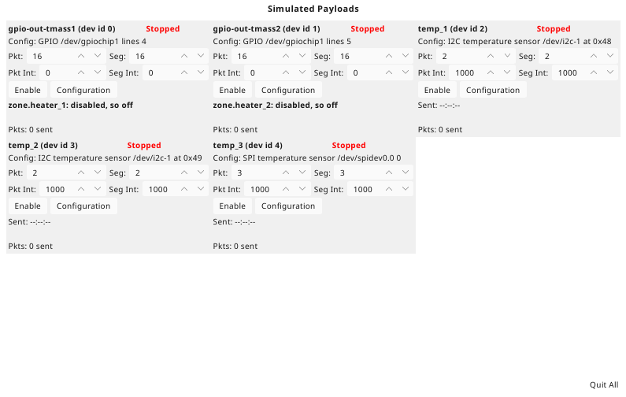
The window as it opens. Every payload is Stopped -- its simulated device is made, so tcspecial finds it, but nothing goes over it -- and each panel offers Enable. The heater switches' first line says what they are doing; the sensors' says Sent: --:--:--, nothing having gone yet.
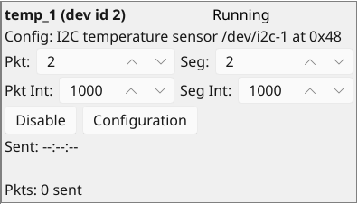
Enable pressed on temp_1. The status is Running and the button offers Disable; no reading has gone yet.
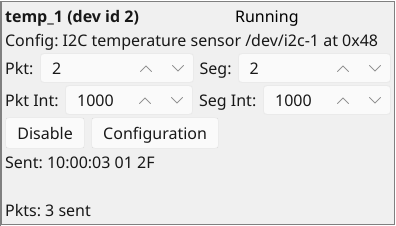
Three seconds on. Sent gives the time of the last reading and its bytes -- the zone's temperature as the sensor reads it, in the encoding tcspecial's conversion reads back -- and Pkts counts three. Pkt, Seg, Pkt Int and Seg Int can be changed here while it runs, and take effect on the next reading.
Switching a heater
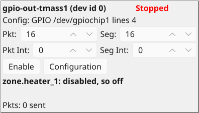
The heater switch gpio-out-tmass1 as it opens. It drives the zone's heater_1, so its line names that heater -- gpio-out-tmass2's says zone.heater_2 -- and disabled -- its button is its power -- it is off whatever it is sent.
tcspecial's thermostat switches it on. Nothing changes on the panel or in the zone, so the panel is drawn as above: a disabled heater stays off. What it was sent is kept.
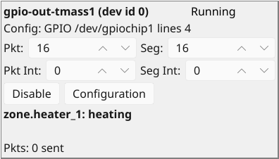
Enable pressed. The on it was sent is applied at once -- zone.heater_1: heating -- rather than at the thermostat's next decision, which comes only when the decision changes.
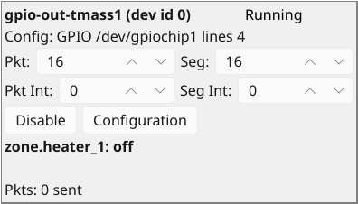
The thermostat switches it off, and the line says zone.heater_1: off. A heater sends nothing, so its Pkts stays at nought throughout.
Sizes that cannot be sent
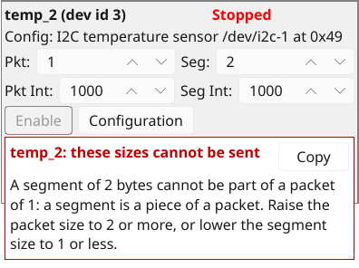
Pkt stepped down from 2 to 1 on temp_2, leaving its 2-byte segment larger than the packet. A popup under the buttons says so at once, naming both sizes and either way out, and Enable is greyed out.
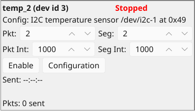
Pkt stepped back up to 2. The popup goes and Enable comes back. Nothing is written to the files either way.
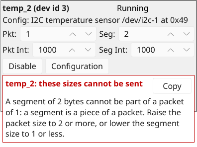
Enable pressed, and Pkt stepped down to 1 again while it runs. The popup says the same, but Disable stays: only starting is refused, and a payload sending sizes that cannot be sent can always be stopped.
A fault taking effect
Faults are asked for in the simulator configuration, not in the window (see Fault injection above). Here the thermostat example's file has one line added to temp_3's entry:
simulated_payloads: - type spi_tmass: - payload: temp_3 silent_after: 3 accuracy: 0.25 K group: zone_temps lag: 6 s noise: 0.02 K offset: -0.3 K
temp_2, which has no fault, and temp_3 are enabled together:
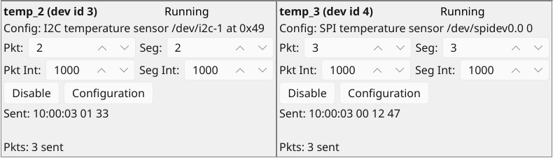
Three seconds on, temp_2 and temp_3 have each sent three readings, and look alike.
Seven seconds later temp_2 has sent ten, the last at 10:00:10. temp_3 is still Running, its link still open, but has sent nothing since its third: its Sent time has stopped, which is the sign a wedged instrument gives, and what tcspecial's handler for it sees is readings that have stopped coming.
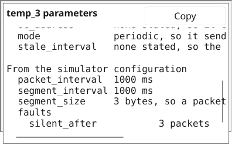
temp_3's Configuration pressed, and its list scrolled to the foot with the mouse wheel: under faults, at the end of what the simulator configuration said, is silent_after 3 packets. The list is longer than the popup, and scrolls.